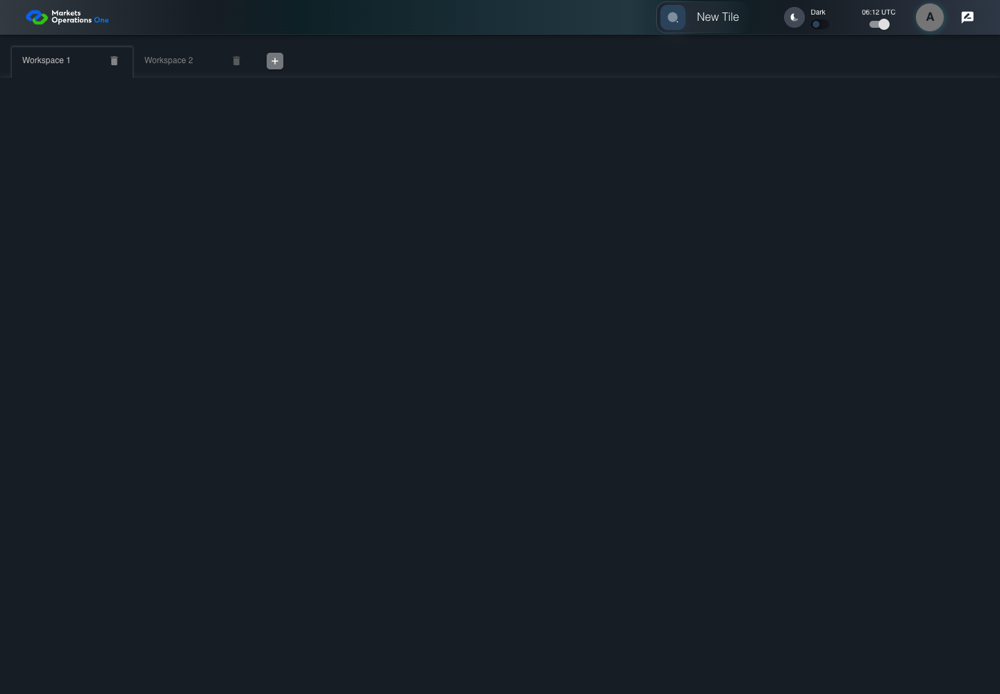

UI-SHL-015 removing later tab preserves selected workspace
PASS · application/run-050/ui-shl-015-removing-later-tab-preserves-selected-workspace-cc249eced7fb-attempt-1 · ACTUAL_APPLICATION_LOCAL_SERVICES
Actual current MFE; controlled accepted login, validation, and activity renewal; unsigned fixture JWT; explicit stored workspaces. No real identity, server authorization, or backend persistence verification.
2026-10-22T06:12:13.937Z to 2026-10-22T06:12:18.762Z
Assertions and result · Artifact manifest · Exact run inputs and source hashes
Result SHA-256:496ec210e317bfbd85c933374ff0bcf02287bac63bdc14e64bc6b07aac5ca84cMachine observations
- stored-workspace-setup.json
d0655ced95b452aa406c6e9e6860a5b81e3accebdafa0d1f3f6a7e49cd60984c
Screenshot capture: CAPTURED. Named frames: 6.
Step screenshot evidence: COMPLETE. 5/5 canonical steps have execution screenshots.
Canonical step timeline
Given User A is authenticated as fixture UI-USER-01 with the case-specific permissions
Execution: PASSED.1. step-01 Visible state after step 1: Given User A is authenticated as fixture UI-USER-01 with the case-specific permissions
2026-10-22T06:12:17.163Z · 1440×1000
Step: /Users/lushevol/code/github/ratan-release-impact/workbench/tasks/ui-test-coverage-20261022/test-cases.md:5842
SHA-256:408103b4b8b0ff20ee3d1515ee9e7b313791961f793a901b36946c0113dbf81fAnd W1, W2, and W3 exist and W1 is selected
Execution: PASSED.2. step-02 Visible state after step 2: And W1, W2, and W3 exist and W1 is selected
2026-10-22T06:12:17.266Z · 1440×1000
Step: /Users/lushevol/code/github/ratan-release-impact/workbench/tasks/ui-test-coverage-20261022/test-cases.md:5843
SHA-256:942ddcd2d7cae24579012014083b3f8417038a7c3698dc3875eb6d1dbda69ec8When User A clicks icon button named "delete" inside the W3 workspace tab
Execution: PASSED.3. step-03 Visible state after step 3: When User A clicks icon button named "delete" inside the W3 workspace tab
2026-10-22T06:12:17.474Z · 1440×1000
Step: /Users/lushevol/code/github/ratan-release-impact/workbench/tasks/ui-test-coverage-20261022/test-cases.md:5844
SHA-256:0b495c5d6eb85b0bde7a9c6110fe05bb9b234e3a8b6b1f14945afb6639c37b81Then tab with source identity "Workspace Name textbox value Workspace 3" inside the shell tablist named "workspaces" is absent
Execution: PASSED.
4. step-04 Visible state after step 4: Then tab with source identity "Workspace Name textbox value Workspace 3" inside the shell tablist named "workspaces" is absent
2026-10-22T06:12:17.593Z · 1440×1000
Step: /Users/lushevol/code/github/ratan-release-impact/workbench/tasks/ui-test-coverage-20261022/test-cases.md:5845
SHA-256:29efe974bfc811a590dc3e6e1f8795d23659f31eb6d8333b4641921293bf1eb7And tab with source identity "Workspace Name textbox value Workspace 1" inside the shell tablist named "workspaces" is selected
Execution: PASSED.5. step-05 Visible state after step 5: And tab with source identity "Workspace Name textbox value Workspace 1" inside the shell tablist named "workspaces" is selected
2026-10-22T06:12:17.837Z · 1440×1000
Step: /Users/lushevol/code/github/ratan-release-impact/workbench/tasks/ui-test-coverage-20261022/test-cases.md:5846
SHA-256:f8390d49d97ecd316200c61c03ec7357eafcd228489658b2d53b0b2ab5e6d3db
Additional named frames
The final visible state after the named test assertions.
2026-10-22T06:12:17.995Z · 1440×1000Step: Test source: /Users/lushevol/code/github/ratan-release-impact/workbench/e2e/audit-specs/workspace-edges.spec.ts:95
SHA-256:
593e5fcd1937e9195e7d6bc498f282bcb201cfdbb6cc99a93785d7ab7476fdcbScreenshots establish visible state only. Assertions and traces support functional claims.